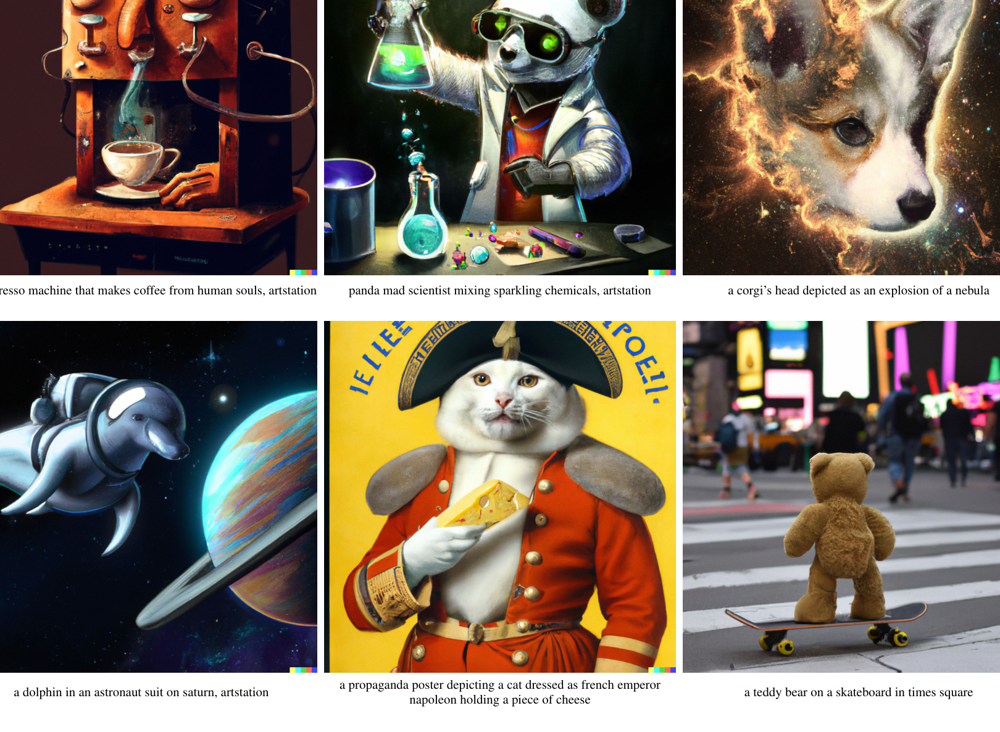
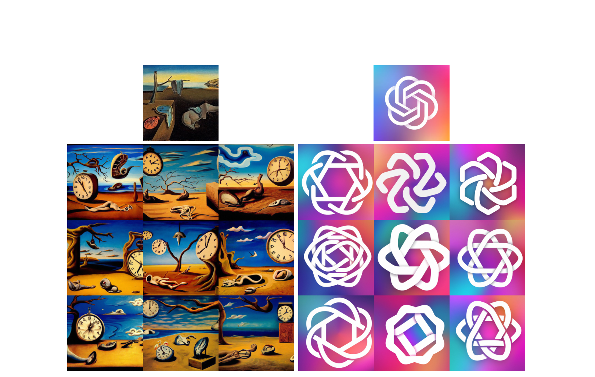
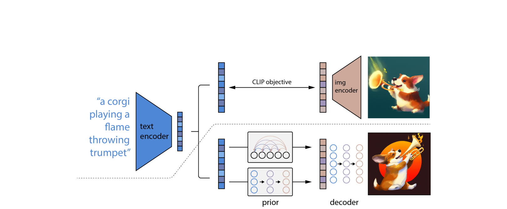
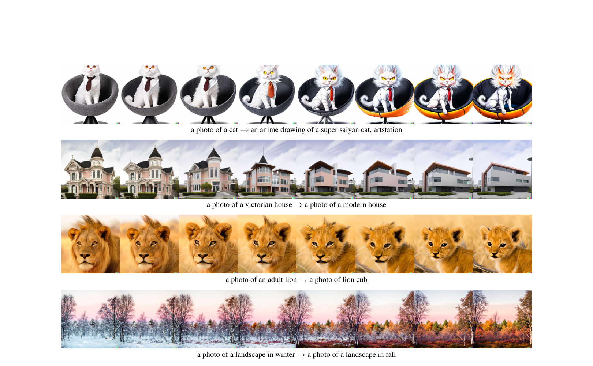

DALL·E 2¶
📄 论文链接：arXiv:2204.06125 | PDF
目录¶
- 核心要点
- 1. DALL·E 2 概述与展示
- 2. DALL·E 2 论文结构
- 3. DALL·E 2 方法详解
- 4. 图像生成模型发展历程
- 5. 扩散模型（Diffusion Model）详解
- 6. DALL·E 2 应用能力
- 7. 实验结果
- 8. 局限性与不足
- 总结与对比
核心要点¶
- DALL·E 2 是 OpenAI 文本到图像生成的最新力作，能够根据文本描述生成原创性、高分辨率（1024×1024）的逼真图片，并支持图像编辑、风格迁移等零样本应用。
- 核心架构为两阶段 unCLIP 框架：第一阶段 prior 模型将 CLIP 文本特征转换为 CLIP 图像特征；第二阶段 decoder（基于扩散模型）将图像特征解码为真实图像。CLIP 模型全程冻结。
- 扩散模型（Diffusion Model）是本视频的重点讲解内容，从 GAN → AE → VAE → VQ-VAE → DDPM → Improved DDPM → GLIDE → DALL·E 2 完整梳理了图像生成模型的发展脉络。
- 关键技术包括 classifier-free guidance、级联式上采样生成、预测噪声 vs 预测原始特征的取舍，这些技巧使扩散模型在保真度上首次超越 GAN，同时保持更好的多样性。
- DALL·E 2 仍存在明显局限：物体-属性绑定差、无法正确生成文字、复杂场景细节缺失、存在安全风险和"秘密语言"问题，但整体推动了文本到图像生成领域的白热化竞争。
1. DALL·E 2 概述与展示¶

Figure 1: DALL·E 2 生成样本展示1.1 背景与动机¶
- DALL·E 2 是 OpenAI 文本-图像生成系列的最新工作：2021年1月推出 DALL·E，年底推出 GLIDE，2022年4月推出 DALL·E 2。
- DALL·E 2 发布后在社交媒体上引发轰动，生成的图片被广泛传播。
- OpenAI CEO 表示 DALL·E 2 改变了他对 AI 的理解——原本认为创造性工作是 AI 难以取代的，但现在艺术创作已触手可及。
1.2 核心能力展示¶
- 文本到图像生成：可根据概念、属性、风格的任意组合生成原创图片。例如"宇航员骑马+写实风格"、"一碗汤作为传送门+数字画风格"、"泰迪熊做AI研究+1980年代月球表面"。
- 图像编辑：可在已有图片中根据文本添加或移除物体，且能正确处理阴影、反射、纹理。例如在大厅不同位置添加火烈鸟，模型甚至能根据场景合理性生成火烈鸟形状的游泳圈而非真火烈鸟。
- 无文本的风格迁移：给定一张图片，可生成多张保持相同语义但风格细节不同的变体。
- 分辨率提升：DALL·E 2 可生成 DALL·E 四倍分辨率的图片，更清晰逼真。
- 用户评价：70% 的志愿者认为 DALL·E 2 生成的图片与文本更贴切，近 90% 认为比 DALL·E 更真实。
1.3 安全与伦理考虑¶
- OpenAI 暂不开源模型，甚至不开放 API，仅向少量用户开放内测。
- 主要担忧：生成暴力、成人、政治敏感图片；训练数据中的偏见和公平性问题。
- 开源替代方案：dalle-mini（GitHub 9000+ star），可通过 Hugging Face Space 直接体验，但模型较小、画质较粗糙。
1.4 相关工作发展时间线¶
| 时间 | 模型 | 机构 | 特点 |
|---|---|---|---|
| 2021.01 | DALL·E | OpenAI | 120亿参数，VQ-VAE + GPT |
| 2021.05 | CogView | 清华 | 支持中文 |
| 2021.11 | NÜWA（女娲） | 微软/北大 | 支持图像和视频生成 |
| 2021.12 | GLIDE | OpenAI | 扩散模型，35亿参数 |
| 2021.12 | ERNIE-ViLG | 百度 | 支持中文，100亿参数 |
| 2022.04 | DALL·E 2 | OpenAI | CLIP + 扩散模型 |
| 2022.04 | CogView 2 | 清华 | 改进版 |
| 2022.05 | CogVideo | 清华 | 视频生成 |
| 2022.05 | Imagen | 扩散模型，效果与 DALL·E 2 相当甚至更好 | |
| 2022.06 | Parti | 自回归模型，200亿参数，超越 DALL·E 2 |
- 扩散模型预感将取代 GAN 的地位，当前状态类似 2017-2018 年的 GAN，至少还有 2-3 年的发展潜力。
2. DALL·E 2 论文结构¶
- 论文共 27 页（去除可视化和参考文献后约十几页），图多文少。
- 结构：摘要 → 引言（含9张高清大图展示）→ 方法（仅两页）→ 应用展示（4-5页）→ 对比实验（4-5页）→ 相关工作 → 局限性与不足 → 参考文献 → 附录。
- 方法部分极其精简，未讲解 CLIP（假设读者已知），主要讲 decoder 和 prior 的实现细节。
- 论文内部自称 unCLIP（因为是 CLIP 的逆过程：从特征还原到数据）。
3. DALL·E 2 方法详解¶

Figure 3: 通过 CLIP 特征生成图像变体
Figure 2: unCLIP 架构（先验网络 + 扩散解码器）3.1 整体架构：两阶段 unCLIP¶
DALL·E 2 = CLIP（冻结）+ prior 模型 + decoder 模型
推理流程： 1. 给定文本 → 通过冻结的 CLIP 文本编码器 → 得到文本特征 zt 2. 文本特征 zt → 通过 prior 模型 → 生成图像特征 zi 3. 图像特征 zi → 通过 decoder（扩散模型）→ 生成图像 x
训练时： - CLIP 模型完全冻结，不做任何训练或 fine-tune - 利用 CLIP 生成的图像特征作为 ground truth 来监督 prior 模型的训练
概率分解（Chain Rule）： - p(x|y) = ∫ p(zi|y) · p(x|y, zi) dzi - p(zi|y) 对应 prior 阶段 - p(x|y, zi) 对应 decoder 阶段
为什么需要显式生成图像特征？ - 直接从文本到图像的端到端生成不如两阶段效果好 - 显式生成图像特征能显著提升图像的多样性（diversity），同时对写实程度和文本匹配度没有损失 - 相比 GAN 的高保真但低多样性，扩散模型 + 两阶段设计兼顾了两者
3.2 Decoder（解码器）¶
Decoder 本质上是 GLIDE 模型的升级版，主要改动：
- CLIP Guidance：使用 CLIP 模型作为引导信号（具体操作有变化，需看代码）。
- Classifier-Free Guidance：
- 训练时 10% 的概率将 CLIP 特征置零
- 训练时 50% 的概率丢弃文本特征
- 让模型同时学习有条件和无条件的生成，推理时利用两者的差异进行引导
- 级联式生成（Cascaded Generation）：
- 先生成 64×64 小图
- 上采样到 256×256
- 再上采样到 1024×1024 高清大图
- 训练过程中加入大量噪声以保证稳定性
- 网络结构：使用 spatial convolution（CNN/U-Net），不使用 attention layers，因此可应用于任意尺寸的图像
3.3 Prior（先验模型）¶
Prior 模型的目标：给定文本特征 zt，生成对应的 CLIP 图像特征 zi。
尝试了两种方案：
3.3.1 自回归（Auto-Regressive）Prior¶
- 类似 DALL·E/GPT 的方式：输入文本特征，遮住图像特征，自回归预测
- 缺点：训练效率太低
- 使用了 PCA 降维等加速技巧
- 最终效果与扩散 prior 差不多，但训练更难
3.3.2 扩散 Prior（最终采用）¶
- 使用 Transformer decoder（而非 U-Net），因为输入输出是 embedding 而非图像
- 模型输入：文本 + CLIP 文本特征 + time step embedding + 加噪后的 CLIP 图像特征 + Transformer 自身的 embedding（如 cls token）
- 预测目标：直接预测未加噪的 CLIP 图像特征 zi（而非预测噪声）
- 这与 DDPM 以来"预测噪声"的主流做法不同
- 作者发现对于特征重建任务，直接预测原始特征比预测噪声效果更好
- 同样使用了 classifier-free guidance
- 扩散 prior 训练更容易、效果略好，因此论文主要围绕此方案展开
3.4 关键总结¶
- DALL·E 2 = CLIP + GLIDE 的结合体，但加入了大量工程技巧
- 论文方法部分极短，很多细节需看代码才能理解
- 各种技巧的有效性并不一致：有时预测噪声好，有时预测原始特征好；有时两阶段好，有时一阶段也行（如 Imagen）
- 最终结论：scale matters——模型规模和数据规模才是决定性因素
4. 图像生成模型发展历程¶

Figure 5: 文本编辑操作（text diffs）4.1 GAN（Generative Adversarial Network）¶
- 原理：Generator 从随机噪声生成图片，Discriminator 区分真假，两者对抗训练
- 优点：
- 保真度极高，生成的图片人眼难辨真假（DeepFakes 的基础）
- 经过多年改进，模型好用、数据需求相对较少
- 缺点：
- 训练不稳定（两个网络的平衡问题，容易坍塌）
- 多样性差（创造性不足，生成结果趋同）
- 非概率模型，生成过程隐式，数学上不够优美
4.2 Auto-Encoder（AE）与 Denoising AE（DAE）¶
- AE：输入 x → 编码器 → bottleneck 特征 → 解码器 → 重建 x。目标是学习压缩特征，不用于生成（无法采样）。
- DAE：先将输入加噪/扰动得到 corrupted x，再编码-解码重建原始 x。使模型更稳健、不易过拟合。
- MAE（Masked Auto-Encoder）：mask 掉 75% 的图像区域仍能重建，说明图像冗余性高，验证了 denoising/masking 思路的有效性。
- AE/DAE/MAE 的核心目的是学特征用于下游任务（分类、检测等），而非生成。
4.3 VAE（Variational Auto-Encoder）¶
- 与 AE 的关键区别：中间不再学习固定的 bottleneck 特征，而是学习一个概率分布（假设为高斯分布）
- 具体做法：编码器输出均值 μ 和方差 σ²，通过重参数化技巧 z = μ + σ ⊙ ε（ε ~ N(0,1)）采样得到 z
- 可用于生成：训练完成后扔掉编码器，直接从高斯分布采样 z，通过解码器生成图像
- 贝叶斯视角：编码器学的是后验概率 q(z|x)，先验分布 p(z) 为标准正态，解码器学的是似然 p(x|z)，整体优化目标是最大化 ELBO
- 优点：数学优美、多样性好（从分布采样）
- 后续工作：VQ-VAE、VQ-VAE-2、DALL·E v1
4.4 VQ-VAE（Vector Quantised VAE）¶
- 动机：VAE 的连续分布不好学、模型难以做大；现实中信号都是离散化的
- 核心做法：用一个 codebook（K×D 的向量表，通常 K=8192, D=512/768）替代连续分布
- 编码器输出特征图 → 每个位置的特征与 codebook 中最近的向量匹配 → 用该向量的 index 表示 → 再用 codebook 中的向量替换得到量化特征 fq
- 量化特征可控、优化容易
- 生成需要额外的 prior 网络：VQ-VAE 原文使用 PixelCNN 作为 prior，学习 codebook index 的分布
- 应用：DALL·E v1 直接使用 VQ-VAE 的 codebook；BEiT 用 DALL·E 的 codebook 做视觉自监督学习；VL-BEiT 扩展到多模态
- VQ-VAE-2：层级式建模 + attention + 更好的 prior，生成效果显著提升
4.5 DALL·E v1¶
- 架构：两阶段
- 训练 VQ-VAE codebook（直接复用）
- 将文本（BPE 编码，256 tokens）和图像（经 VQ-VAE 量化为 32×32=1024 tokens）拼接为 1280 tokens 的序列，用 GPT 自回归预测
- 推理：给定文本 → 自回归生成图像 tokens → 用 CLIP 排序选出最佳图片
- 特点：120亿参数，大力出奇迹，大量工程细节（分布式训练、数据收集）
5. 扩散模型（Diffusion Model）详解¶
5.1 基本原理¶
- 前向扩散（Forward Diffusion）：从真实图片 X0 开始，逐步添加微小的高斯噪声，经过 T 步后变为纯噪声 XT（各向同性正态分布）。名称来自热力学中的扩散现象（高密度→低密度→平衡）。
- 反向扩散（Reverse Diffusion）：从纯噪声 XT 开始，训练一个网络逐步去噪，恢复出 X0。这就是图像生成的过程。
- 共享参数：所有时间步使用同一个模型，通过 time embedding 区分不同步骤。
- 推理速度慢：原始扩散模型需要 T=1000 步 forward，远慢于 GAN 的单次 forward。
5.2 网络结构：U-Net¶
- 扩散模型的输入输出始终是同尺寸图像，因此采用 U-Net（编码器-解码器 + skip connection）
- 后续改进：在 U-Net 中加入 attention 操作
- 不一定要用 U-Net，但大部分扩散模型都采用此结构
5.3 DDPM（Denoising Diffusion Probabilistic Model, 2020）¶
DDPM 是扩散模型的开山之作，两大贡献：
- 预测噪声而非预测图像：
- 之前：用 Xt 预测 Xt-1（图像到图像）
- DDPM：用 Xt 预测添加的噪声 ε（类似 ResNet 的残差思想）
- 大幅简化优化难度
-
目标函数：L = ||ε - ε_θ(Xt, t)||²，其中 ε 是已知的（前向过程中自己加的），ε_θ 是 U-Net 预测的噪声
-
方差无需学习：
- 预测正态分布只需学均值和方差
-
DDPM 发现方差设为常数即可，进一步降低优化难度
-
Time Embedding：正弦位置编码或傅里叶特征，告诉模型当前在哪一步。早期步骤生成粗略轮廓，后期步骤补充高频细节。
5.4 Improved DDPM（2020年底）¶
由 DALL·E 2 的二作和三作完成，改进点： - 学习方差：不再用常数，而是让模型学习方差，提升采样和生成效果 - 余弦噪声 schedule：从线性改为余弦（类似学习率 schedule 的演进） - 大模型可扩展性：验证了扩散模型 scale 得非常好，更大模型 = 更好结果
5.5 Diffusion Models Beat GANs（2021）¶
- 模型加大：增加宽度、attention head 数量、multi-scale attention
- Adaptive Group Normalization：根据步数做自适应归一化
- Classifier Guidance（关键技巧）：
- 同时训练一个噪声图像分类器（在加噪的 ImageNet 上训练）
- 在反向扩散过程中，用分类器的梯度引导采样方向
- 梯度暗含"当前图片是否像某类物体"的信息，促使生成更逼真
- 可将采样步数从 1000 降至 25 步
- 代价：牺牲部分多样性换取保真度
- 里程碑：扩散模型首次在 IS/FID 分数上超越 BigGAN
5.6 Guidance 技术演进¶
Classifier-Guided Diffusion¶
- 用额外分类器的梯度引导
- 可扩展为 CLIP guidance（用 CLIP 替代分类器，实现文本控制）
- 还可做像素级、特征级、风格级（Gram Matrix）、语言模型级的引导
- 缺陷：需要额外训练或使用预训练模型，成本高、不可控
Classifier-Free Guidance（GLIDE/DALL·E 2/Imagen 均采用）¶
- 核心思想：不需要外部分类器，模型自身同时学习有条件和无条件的生成
- 训练时：
- 有条件：输入 (Xt, t, y) → 生成 Xy
- 无条件：随机将条件 y 替换为空集 → 生成 X
- 推理时：利用有条件和无条件输出的差异方向，放大条件的影响
- 优点：摆脱外部模型限制
- 缺点：训练成本翻倍（每次生成两个输出）
- 被 GLIDE、DALL·E 2、Imagen 等一致认为是重要技巧
5.7 GLIDE（2021.12）¶
- 35亿参数的扩散模型，效果直逼 120亿参数的 DALL·E v1
- 融合了 classifier-free guidance 等多种技巧
- 证明了扩散模型在文本到图像生成上的可行性
- 促使 OpenAI 放弃 DALL·E v1 的 VQ-VAE 路线，转向扩散模型
5.8 DDPM 与 VAE 的对比¶
| 维度 | 扩散模型 | VAE |
|---|---|---|
| 编码器 | 固定过程（加噪） | 学习的 |
| 中间表示维度 | 与输入相同 | 远小于输入（bottleneck） |
| 步数概念 | 有 time step / time embedding | 无 |
| 参数共享 | 所有步共享 U-Net | 不适用 |
| 数学性质 | 高斯分布，可做推理证明 | 变分推断，ELBO |
6. DALL·E 2 应用能力¶
6.1 图像变体生成¶
- 给定一张图片，通过 CLIP 图像编码器得到特征 → prior 生成新的图像特征 → decoder 生成新图片
- 保持语义和风格一致，但布局、细节各不相同
- 应用场景：LOGO 设计迭代（画草图 → DALL·E 2 生成多个方案 → 挑选 → 再生成）
6.2 图像内插（Image Interpolation）¶
- 在两张图片的 CLIP 图像特征之间做线性插值
- 生成的图像平滑过渡：风格、物体、颜色均渐变
6.3 文本-图像内插¶
- 在两个文本的 CLIP 文本特征之间做插值
- 例如："一只猫" → "超级赛亚猫"，生成图像逐渐从正常猫变为头发炸起的猫
- 其他例子：维多利亚建筑 → 现代建筑、成年雄狮 → 幼年狮子、冬天 → 秋天
6.4 零样本图像编辑¶
- 通过 CLIP 作为桥梁，用文本引导对已有图像进行编辑
- 无需额外训练，直接可用
7. 实验结果¶
7.1 定量对比（MS-COCO Zero-Shot FID）¶
| 模型 | FID ↓ |
|---|---|
| DALL·E | 28.x |
| GLIDE | 12.x |
| unCLIP (AR prior) | ~10.x |
| unCLIP (Diffusion prior) | ~10.x（略优于 AR） |
- 扩散 prior 与 AR prior 分数接近，但扩散 prior 训练更容易
- DALL·E 2 相比 GLIDE 在 COCO 上 FID 从 12 降至 10
7.2 定性对比¶
- DALL·E 2 生成的图片在细节（反光、光影、纹理）上显著优于 DALL·E 和 GLIDE
- 文本匹配度更高，场景理解更准确
8. 局限性与不足¶
8.1 物体-属性绑定差¶
- 例如"红色方块在蓝色方块上面"，DALL·E 2 经常搞错颜色和位置关系，而 GLIDE 反而做得更好
- 原因分析：CLIP 只学习相似性，不理解空间关系（on top of）、逻辑关系（是/不是）等，导致下游生成时属性错位
8.2 无法正确生成文字¶
- 生成的图片中文字顺序混乱、拼写错误
- 可能原因：文本编码器使用 BPE（词根词缀编码），非整词编码
- 即使偶尔出现正确字母，排列也不对
8.3 复杂场景细节缺失¶
- 简单场景表现好，但复杂场景（如时代广场）放大后广告牌内容全是模糊色块，无任何语义信息
- 倾向于生成近景、主体突出的图片，忽略背景细节
- 可能与文本描述过短有关，更详细的 prompt 或许能改善
8.4 安全与伦理风险¶
- 生成图片越来越逼真，难以辨别 AI 生成痕迹
- 可能被用于制造虚假信息、政治操纵、歧视性内容
- 呼吁更多安全性研究
8.5 "秘密语言"问题¶
- 研究者发现 DALL·E 2 对某些无意义的字符串（Gibberish）能稳定生成特定语义的图片
- 例如：某串乱码始终对应"鸟"，另一串对应"昆虫"
- 鲸鱼讨论食物的字幕中的乱码输入 DALL·E 2 后生成了海鲜图片
- 安全隐患：这种"黑话"可能绕过内容过滤器，产生不可控的输出
- 也反映了属性绑定的问题（讨论蔬菜的人实际对应的是鸟）
总结与对比¶
核心脉络¶
- GAN → 高保真但低多样性、训练不稳定
- VAE/VQ-VAE → 概率模型、多样性好但保真度不足
- DALL·E v1 → VQ-VAE + GPT，大力出奇迹，120亿参数
- DDPM → Improved DDPM → Diffusion Beats GANs → 扩散模型崛起，保真度追平 GAN
- GLIDE → 扩散模型 + classifier-free guidance，35亿参数超越 DALL·E v1
- DALL·E 2 → CLIP + 扩散模型两阶段，1024×1024 高清生成
- Imagen / Parti → 竞争白热化，scale matters
关键启示¶
- Scale matters：模型规模和数据规模是决定性因素，技巧和架构选择相对次要
- 扩散模型是当前主流：数学优美、多样性好、保真度高、可扩展性强
- CLIP 是双刃剑：提供了强大的文本-图像对齐，但也引入了属性绑定差等问题
- Classifier-free guidance 是通用技巧：被多篇顶会工作采用，值得广泛关注
- 安全性研究亟待加强：生成质量越高，滥用风险越大